Ya en 1906 la North American Review informaba que los muertos en accidentes de auto superaban a los de la guerra de Cuba.
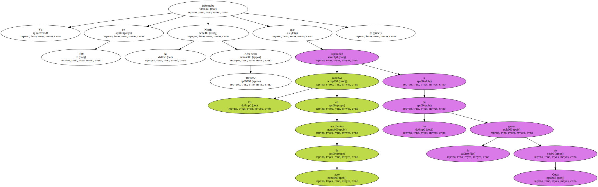El abogado norteamericano Ralph Nader en 1965 decía en un libro famoso : - Por más de medio siglo el automóvil ha traído la muerte , las heridas e incalculables penas y privaciones a millones de personas -.

Y en esa terrible cuenta no se incluyen los daños de la contaminación , la lluvia ácida y el incesante deterioro del medio ambiente.
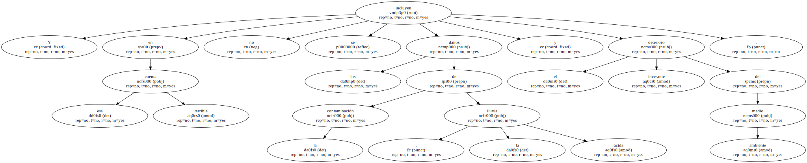La superficie se levanta en algunas zonas - incluso se ha podido detectar una formación montañosa de unos 4.000 metros de altura - y se hunde en otras.
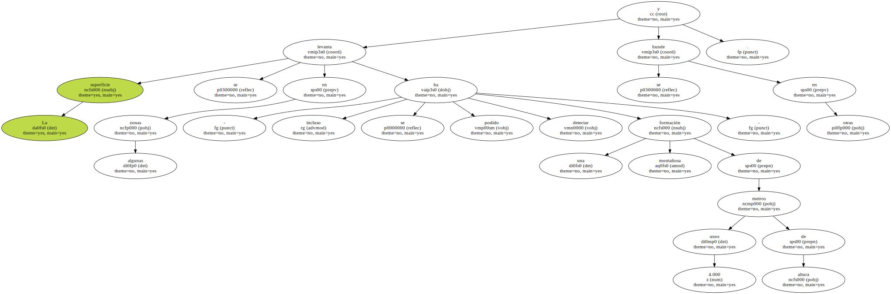En opinión de los citados especialistas , - esto daría prueba de una actividad interna anterior , aunque va a ser difícil ensamblar toda esta historia geológica -.
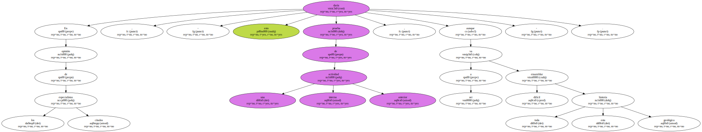De momento , se desconoce de dónde procede la energía de esta posible actividad.
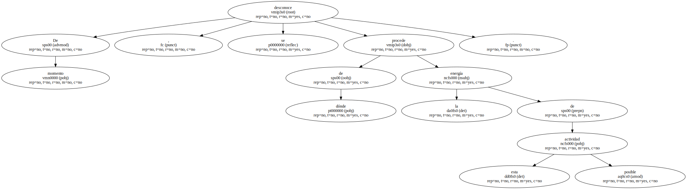- Existen procesos muy complejos que están ocurriendo en este satélite - , concluyen los científicos.
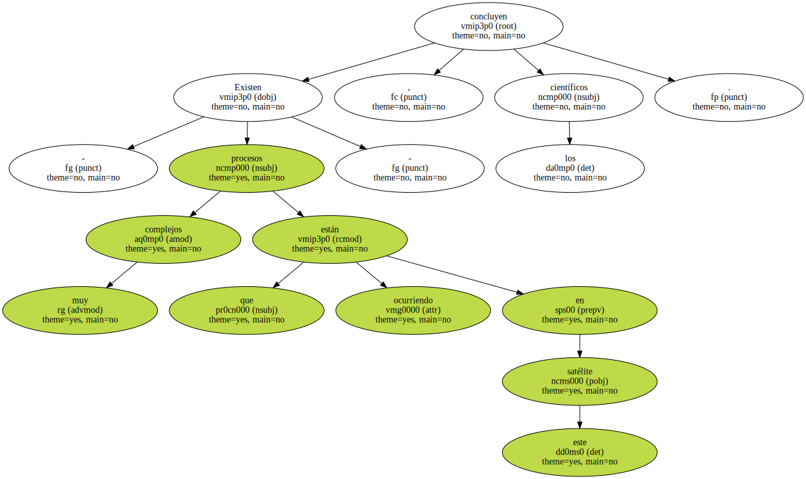- Nos enfrentamos a algo desconocido -.
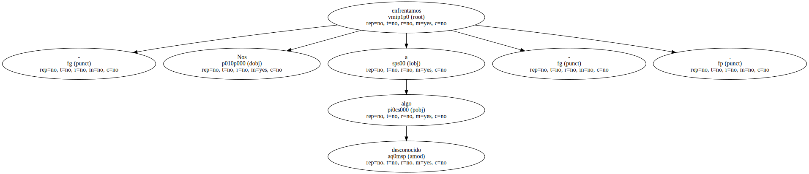Se realizaron también medidas de la energía solar captada por el planeta ( hay que tener en cuenta que la luz que llega a Urano procedente de nuestra estrella es 1.600 veces más débil que la que incide sobre la Tierra ).
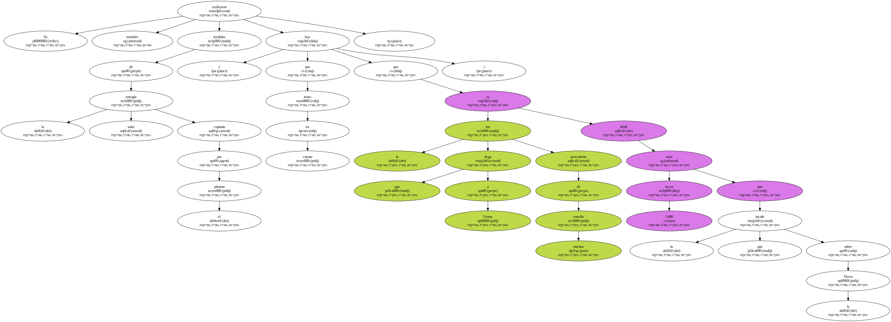Entre tanto , la sonda rastreaba fotográficamente todas y cada una de las lunas recién descubiertas , todas ellas de pequeño tamaño.
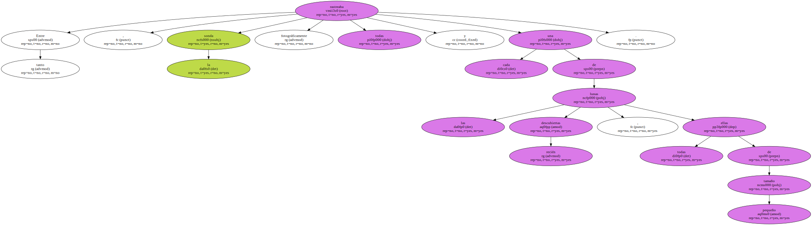Dos de estas lunas , al menos , son del tipo pastor y se encuentran situadas en la parte inferior y exterior , respectivamente , del anillo más grueso y externo , conocido con el nombre de Epsilon.
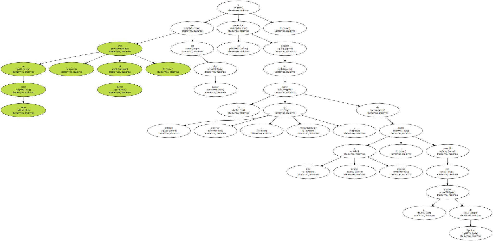El campo gravitacional de estas lunas se encarga de retener en órbita las pequeñas partículas que forman el anillo.
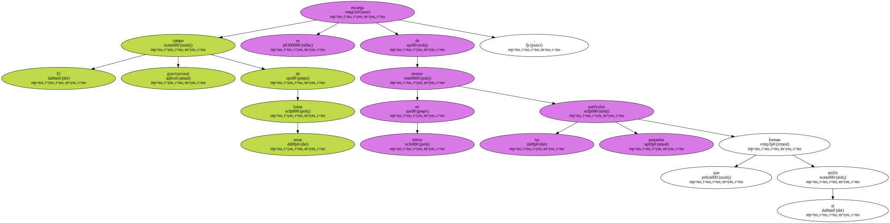Todas ellas son muy oscuras , al igual que los anillos , por lo que los científicos piensan que la composición de ambos puede incluir algún tipo de material rocoso , mezclado con carbono y gases.
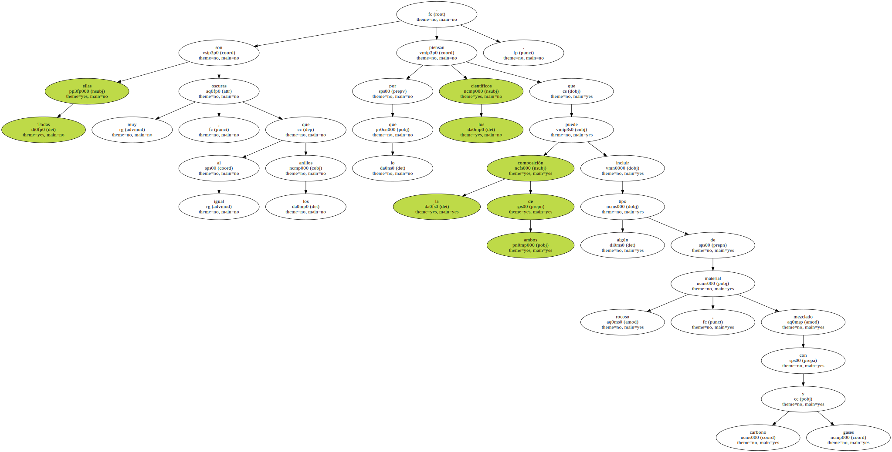- De cualquier forma - , indican los especialistas , - no se conocen con exactitud las propiedades de estos materiales y también es posible que surjan algunos nuevos -.
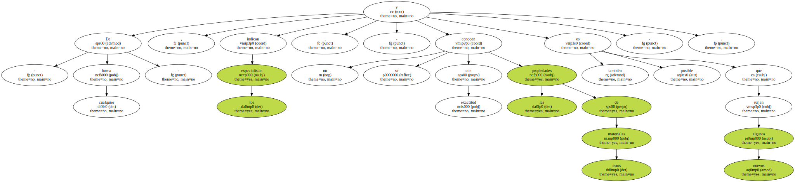En contra de lo que se pensaba , el tamaño de las partículas que componen los anillos es mucho menor de lo que se imaginaba ( del orden de micras ) , lo que ha dejado un tanto perplejos a los investigadores.
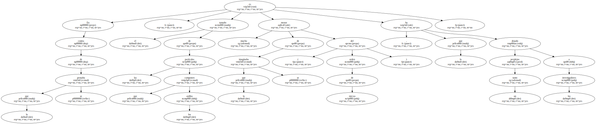